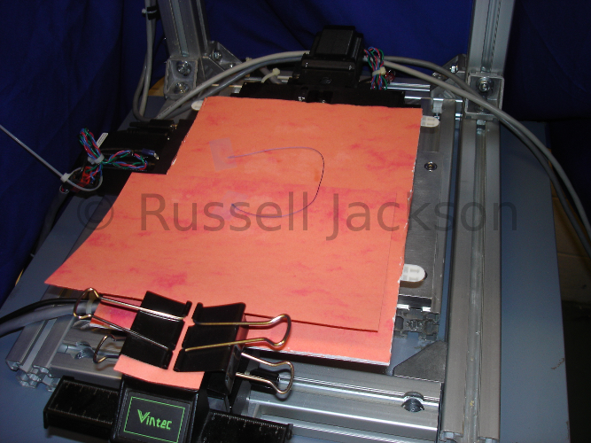

Some of his surgical robotics projects include the following hardware:
This is the complete multiple robot surgical test platform.
The orange robot is an industrial assembly arm built by ABB.

This linear XY-Stage is used to move the thread around while it is tracked by a stereo camera pair.
This is an example of a stereo camera system that are used to track surgical elements.
Please contact the site owner (Russell Jackson) regarding any questions or concerns.
Copyright 2014 Russell Jackson (rcj33@case.edu)